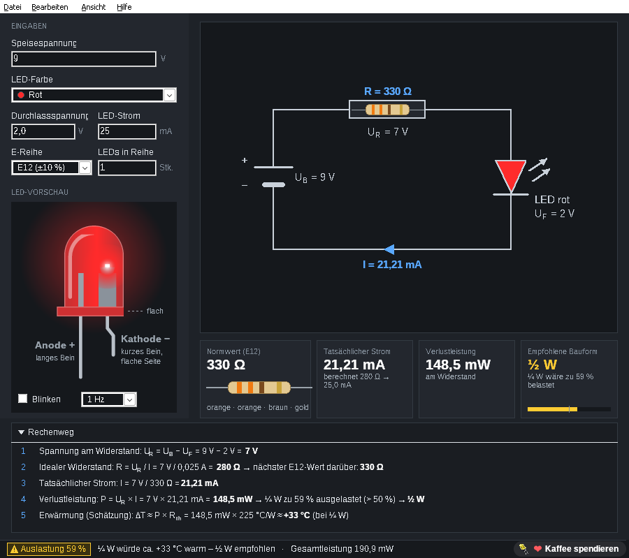
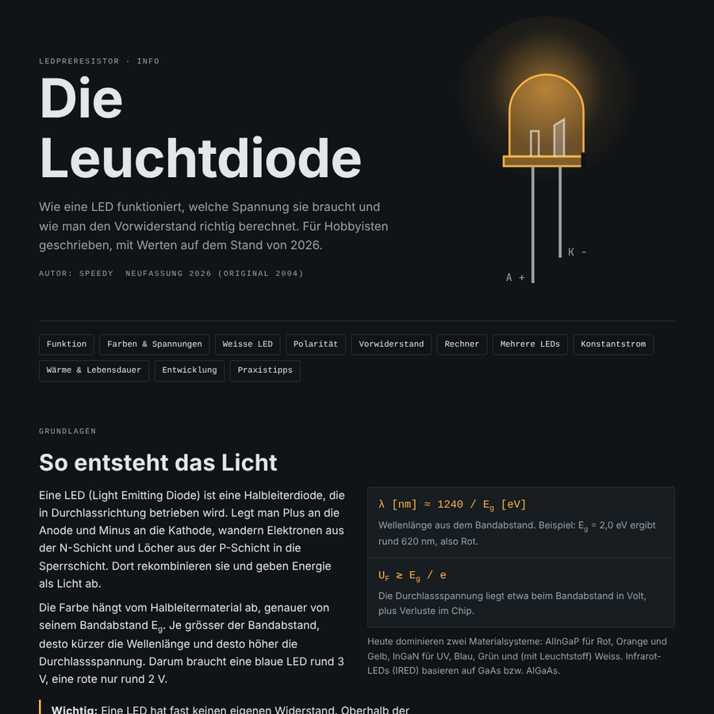

Der richtige Widerstand
für jede LED
Speisespannung eingeben, LED-Farbe und Strom wählen. LedPreResistor sucht den nächsten Normwiderstand, zeigt seine Farbringe, den tatsächlichen Strom und die Leistung und sagt dir, welche Bauform du brauchst. Jeder Rechenschritt steht mit deinen eigenen Zahlen da. Ein kleines Windows-Programm, kostenlos und Open Source.
- Kostenlos & MIT-Lizenz
- Windows 10 / 11
- Eine EXE, keine Installation
- Läuft offline
- E12, E24 und E96

Alles auf einen Blick
Das Resultat ändert sich schon beim Tippen. Kein Knopf zum Drücken, kein Menü zum Suchen.
Normwert und Farbringe
Immer der nächsthöhere Wert aus der Reihe E12, E24 oder E96, damit die LED nie mehr Strom bekommt als geplant. Der Widerstand wird mit seinen Farbringen gezeichnet: vier Ringe bei E12/E24, fünf bei E96.
Leistung und Bauform
Tatsächlicher Strom, Leistung im Widerstand und in den LEDs. LedPreResistor empfiehlt ⅛, ¼, ½ oder 1 W und warnt ab 50 % Auslastung, mit geschätzter Erwärmung des Widerstands.
Rechenweg Schritt für Schritt
Ein aufklappbarer Bereich zeigt die fünf Schritte mit deinen Werten: Spannung am Widerstand, idealer Wert, Normwert, tatsächlicher Strom, Leistung und Erwärmung. Zum Lernen und zum Nachprüfen.
LED-Vorschau
Eine realistische 5-mm-LED in der gewählten Farbe, Anode, Kathode und flache Seite beschriftet, damit sie richtig herum eingelötet wird. Blinkt auf Wunsch mit 0,5 bis 5 Hz.
Schaltplan mit allen Werten
Spannungsquelle, Widerstand und LED in einem übersichtlichen Schaltplan, mit Spannung, Strom und Widerstand an jedem Bauteil. Auch mehrere LEDs in Reihe.
LED-Info eingebaut
Mit F1 öffnet sich «Die Leuchtdiode»: wie eine LED funktioniert, Farben und Durchlassspannungen, Polarität, Vorwiderstand, Konstantstrom und Praxistipps. Im Browser, auch offline.
Warnt, bevor es heiss wird
Ein Widerstand an der Leistungsgrenze wird sehr heiss und altert schnell. LedPreResistor passt darauf auf.
- Grün, gelb, rot in der Statuszeile: Auslastung eines normalen ¼-W-Widerstands und geschätzte Erwärmung
- Ab 50 % Auslastung wird die nächstgrössere Bauform empfohlen, wie es erfahrene Bastler machen
- Zu viel Leistung für einen Widerstand? Das Programm sagt es und schlägt eine Konstantstromquelle vor
- Resultat kopieren mit Strg+Umschalt+C, für Notizen oder einen Forumsbeitrag
- Vorgaben für rote, gelbe, grüne, blaue, weisse und Infrarot-LEDs, oder die eigene Durchlassspannung aus dem Datenblatt
- Komma und Punkt gehen beide; Pfeiltasten und Mausrad ändern die Werte

So geht's
In drei Schritten vom Datenblatt zum richtigen Widerstand.
- Herunterladen und entpackenDas ZIP von GitHub laden und irgendwo entpacken, zum Beispiel nach
C:\Tools\LedPreResistor. Keine Installation, keine Adminrechte, keine Zusatzpakete. - Werte eingebenSpeisespannung, LED-Farbe (oder die Durchlassspannung aus dem Datenblatt), LED-Strom und wie viele LEDs in Reihe geschaltet sind.
- Resultat ablesenNormwert mit Farbringen, tatsächlicher Strom, Leistung und empfohlene Bauform. Im Rechenweg steht, wie es ausgerechnet wurde.
Beispiel: 12 V, eine weisse LED (3,2 V), 20 mA. Berechnet 440 Ω, nächster E12-Wert 470 Ω, tatsächlicher Strom 18,72 mA, 164,8 mW im Widerstand. Ein ¼-W-Widerstand wäre zu 66 % ausgelastet, also ½ W nehmen.
Rechnen und dabei lernen
Die eingebaute LED-Info ist eine kurze Anleitung für Bastler, für Version 2.0 neu geschrieben, mit Werten auf dem Stand von 2026.
- Wie eine LED Licht macht und warum sie einen Vorwiderstand braucht
- Farben, Wellenlängen und typische Durchlassspannungen
- Anode oder Kathode? So erkennst du es
- Mehrere LEDs: in Reihe oder parallel
- Konstantstrom, Wärme und Lebensdauer, Praxistipps
- Mit einem kleinen Rechner direkt auf der Seite

Fragen und Antworten
Ist LedPreResistor wirklich kostenlos?
Ja. LedPreResistor ist Open Source unter der MIT-Lizenz. Keine Werbung, kein Konto, keine Bezahlversion. Wenn es dir gefällt, kannst du freiwillig auf Ko-fi einen Kaffee spendieren.
Warum immer der nächsthöhere Normwert?
Ein kleinerer Wert liesse mehr Strom durch die LED als geplant. Der nächsthöhere Wert hält den Strom auf oder knapp unter deinem Ziel. LedPreResistor zeigt den tatsächlichen Strom mit dem Normwert, so siehst du genau, was du bekommst.
Warum eine Warnung ab 50 % Auslastung?
Ein Widerstand darf bis zu seiner Nennleistung belastet werden, wird dann aber sehr heiss. Mit der halben Nennleistung bleibt er kühl, hält länger, und die Platine leidet nicht. Die angezeigte Temperatur ist eine Schätzung für einen normalen bedrahteten Widerstand in freier Luft.
Kann ich LEDs parallel berechnen?
Gib jeder parallelen LED einen eigenen Widerstand und rechne sie wie eine einzelne LED. Parallele LEDs an einem gemeinsamen Widerstand teilen sich den Strom ungleich auf. Für LEDs in Reihe gibst du die Anzahl ein, und LedPreResistor zieht alle Durchlassspannungen ab.
Windows meldet «Der Computer wurde durch Windows geschützt». Ist das schlimm?
LedPreResistor ist nicht digital signiert, weil Signaturzertifikate jedes Jahr Geld kosten. Auf «Weitere Informationen» und dann «Trotzdem ausführen» klicken. Der ganze Quelltext liegt auf GitHub, zu jedem Release gibt es eine SHA-256-Prüfsumme, und du kannst das Programm mit Lazarus selbst bauen.
Woher kommt LedPreResistor?
Das erste «LED Pre-Resistor» war ein kleines Freeware-Tool von 2004, geschrieben in Delphi 7. Version 2.0 ist komplett neu gebaut, mit Lazarus: eine einzige 64-Bit-EXE, neues Design, korrigierte Rechnung (genau 330 Ω springt nicht mehr auf 390 Ω) und neue Funktionen wie Rechenweg und LED-Vorschau.
Wo melde ich einen Fehler oder eine Idee?
Als Issue auf GitHub. Lesen geht ohne Konto, zum Schreiben braucht es ein kostenloses GitHub-Konto.
Bereit für das nächste LED-Projekt?
ZIP herunterladen, entpacken und losrechnen.
LedPreResistor ist ein Ein-Personen-Hobbyprojekt und bleibt kostenlos. Wenn es dir hilft, kannst du mir auf Ko-fi einen Kaffee spendieren ☕ oder einfach auf GitHub einen Stern geben. Beides ganz freiwillig.